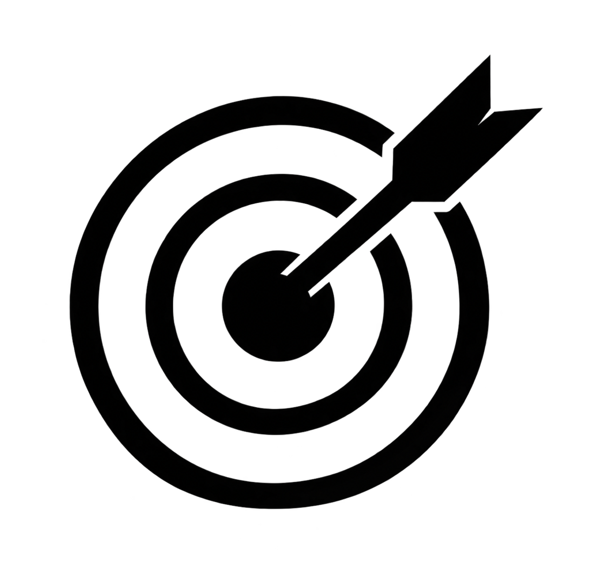
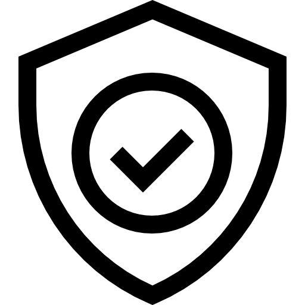
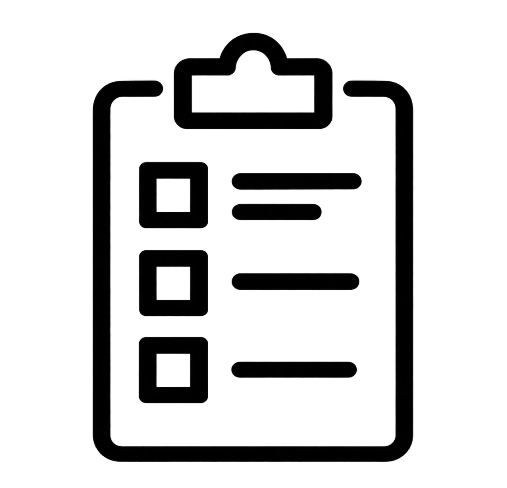

Aprendé . Explorá . Mejorá
Un espacio para comprender los fundamentos, conocer las técnicas de aseguramiento y explorar herramientas que te ayudarán a desarrollar software de mayor calidad.
Comprendé los conceptos clave de la calidad del software, las métricas utilizadas y los estándares internacionales como ISO 9126/25000.

La calidad no es un acto, es un hábito.

Principios, atributos y objetivos de un software de calidad
La calidad del software representa el grado en que un sistema satisface tanto los requisitos especificados como las necesidades e impresiones implícitas de los usuarios finales. Involucra la implementación de buenas prácticas a lo largo de todo el ciclo de vida del desarrollo para prevenir fallos tempranamente, así como la verificación minuciosa del producto final. Sus objetivos principales son garantizar la satisfacción del cliente, reducir los costos de mantenimiento a largo plazo y asegurar que la solución entregada sea confiable, segura y verdaderamente útil para el negocio.
Indicadores que permiten medir y evaluar la calidad.
Las métricas son indicadores cuantitativos fundamentales que permiten medir y evaluar de manera objetiva la calidad tanto del software como de los procesos de desarrollo. A través de métricas de producto se analiza la complejidad del código y la densidad de errores; mediante métricas de proceso se evalúa la eficiencia de los equipos y la rapidez para solucionar incidencias; y con métricas de proyecto se controla el avance y cumplimiento de tiempos. Su uso continuado resulta imprescindible para tomar decisiones basadas en datos y promover la mejora continua en la organización.
Normas internacionales para asegurar la calidad del software.
Los estándares de software son normas y directrices internacionales que definen las mejores prácticas para asegurar una gestión de calidad rigurosa durante la creación del sistema. Destacan marcos de referencia globales como la familia ISO/IEC 25000 (SQuaRE) para la evaluación del producto de software, la norma ISO/IEC 12207 para la gestión del ciclo de vida y modelos como CMMI para la madurez de los procesos organizacionales. Aplicar estas directrices asegura que el producto resultante sea competitivo, interoperable y cumpla con altos niveles de exigencia en la industria.
La funcionalidad define la capacidad del software para ofrecer un conjunto de herramientas y características específicas que satisfagan plenamente las necesidades del usuario.
La eficiencia se refiere a la relación óptima entre el rendimiento que ofrece el sistema y la cantidad de recursos tecnológicos que consume durante su ejecución.

La fiabilidad mide la capacidad del programa para funcionar de manera estable y continua sin experimentar fallos inesperados bajo condiciones operativas normales y durante un periodo de tiempo determinado.
La usabilidad mide qué tan fácil, intuitivo y satisfactorio resulta para las personas aprender a utilizar la aplicación y lograr sus objetivos con eficiencia.

La mantenibilidad expresa la facilidad con la que el software se puede analizar, reparar, adaptar o mejorar a lo largo del tiempo sin degradar su estabilidad general.
La portabilidad se define como la capacidad que posee el programa para ser adaptado, instalado y ejecutado sin inconvenientes en diferentes entornos tecnológicos, plataformas o sistemas operativos.

Modelo para evaluar la calidad del software:
Define características y subcaracterísticas
que permiten medir la calidad de un producto.
La norma ISO/IEC 9126 es un estándar internacional publicado originalmente en 1991 y revisado en 2001, concebido para evaluar la calidad del producto de software. Su propósito principal es proporcionar un marco conceptual unificado para definir y medir la calidad del software a través de un modelo estructurado jerárquicamente en características y subcaracterísticas. Esta norma abarca tanto la calidad interna y externa del software como la calidad en uso, sirviendo como la base histórica fundamental sobre la cual se desarrollaron los modelos de evaluación modernos en la ingeniería de software.
Conocé los tipos, niveles y técnicas de pruebas de software que permiten detectar defectos y garantizar un producto confiable.
Probar no es encontrar errores, sino generar confianza.

Verifican unidades individuales de código.
Comprueban cada parte pequeña del código por separado, como funciones o clases. Sirven para detectar errores rápidamente.

Verifican la interacción entre módulos.
Comprueban que diferentes componentes funcionen correctamente juntos y se comuniquen bien.

Validan el sistema completo.
Comprueban el sistema completo para verificar que cumpla con los requisitos antes de entregarlo.

Se prueba el comportamiento del sistema sin conocer su código interno
Las pruebas de caja negra se centran en verificar la funcionalidad y el comportamiento externo del software sin tener ningún conocimiento de la estructura de código fuente, la lógica interna o la arquitectura del sistema. El evaluador analiza el sistema proporcionando entradas específicas y comparando las salidas obtenidas contra los resultados esperados según los requisitos del proyecto. Este enfoque imita directamente la perspectiva real de un usuario final, garantizando que el software satisfaga las reglas de negocio y los flujos operativos planeados.

Se prueba el comportamiento del sistema conociendo su código interno
Las pruebas de caja blanca, también conocidas como pruebas transparentes o de código abierto, examinan la estructura interna, la lógica del código, los flujos de control y las rutas de datos de la aplicación. El evaluador debe poseer conocimientos profundos de programación para diseñar casos de prueba que ejerciten decisiones condicionales, bucles, estructuras de datos y llamadas a funciones internas. Su objetivo principal es optimizar la arquitectura del software, eliminar código muerto, descubrir vulnerabilidades de seguridad ocultas y asegurar que no existan caminos lógicos no probados.
Explorá herramientas de gestión de pruebas, seguimiento de defectos y análisis de calidad utilizadas en la industria.

Las buenas herramientas multiplican los buenos resultados.